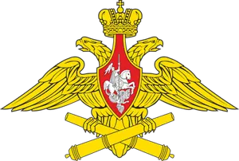
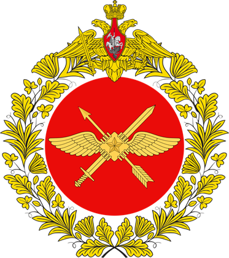
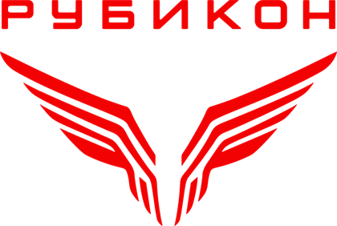
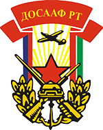
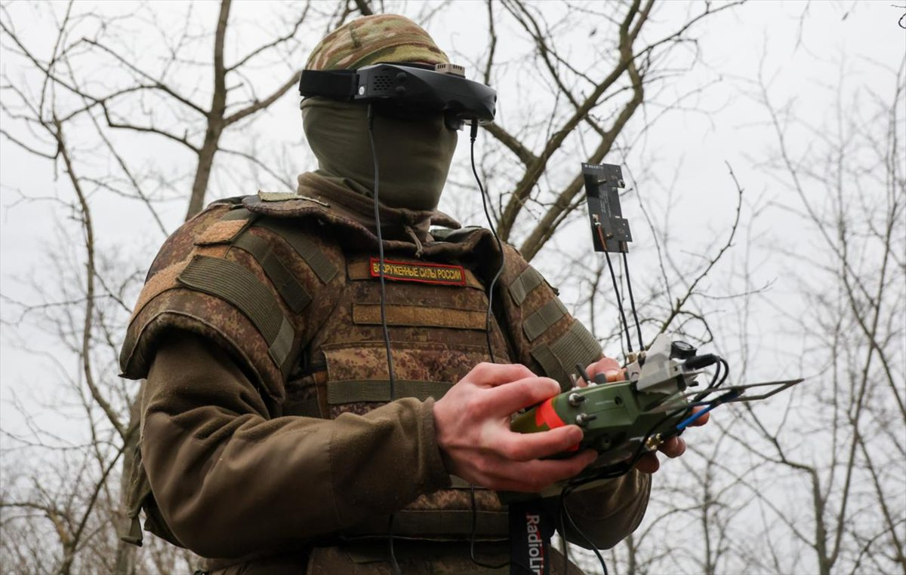
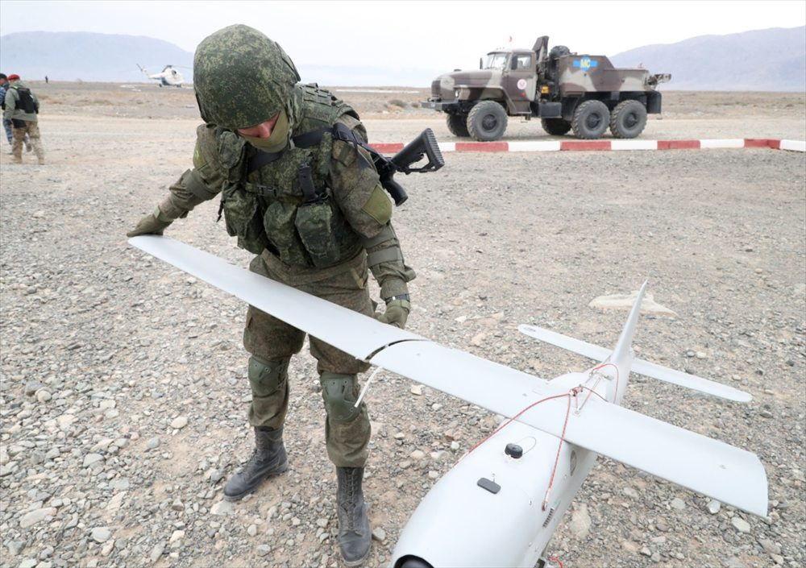
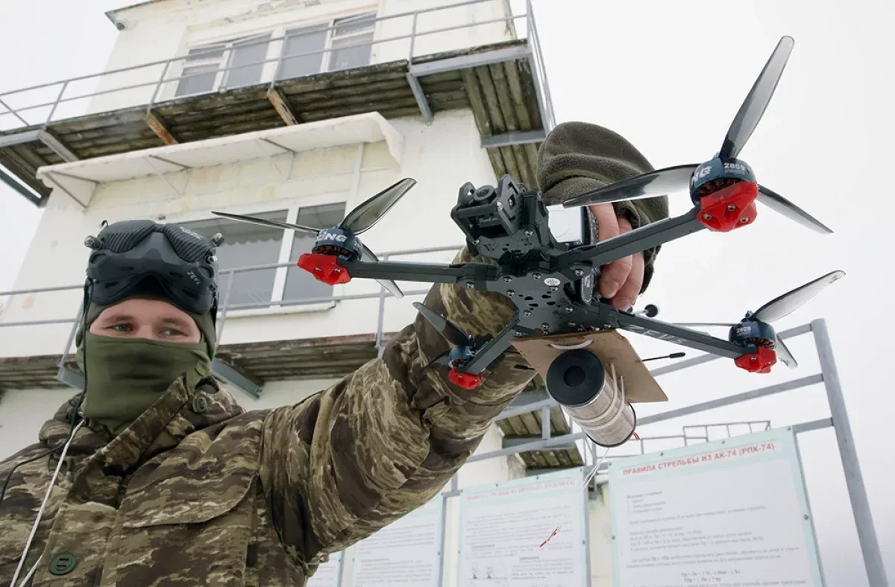
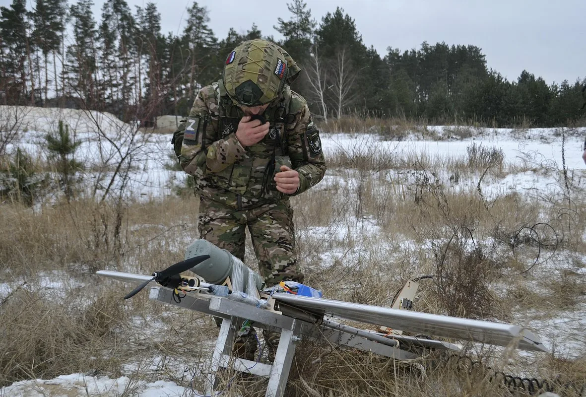
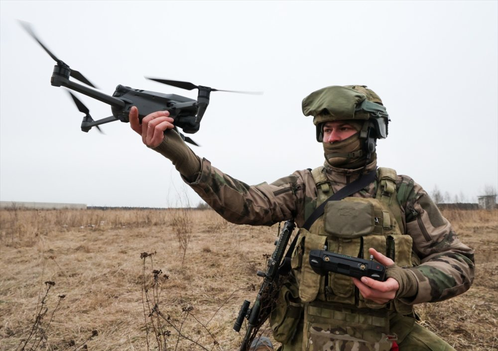

Управление комплексом
Подготовка техники, контроль параметров полёта и работа с наземным оборудованием.
Обучение, проезд и проживание по программе. Сопровождаем кандидата от первого обращения до убытия, в том числе при наличии готового отношения из воинской части.
Внимание: почему у нас нет номера телефона* Окончательные условия зависят от должности и результатов отбора. Значение 250 000 ₽ указано по предварительной информации проекта «Контракт116».
Работа оператором БПЛА — это техническое направление военной службы по контракту. Здесь важны внимательность, пространственное мышление, способность быстро учиться и сохранять концентрацию.
Подготовка техники, контроль параметров полёта и работа с наземным оборудованием.
Оценка поступающей информации, ориентация на местности и передача данных.
Согласованные действия, соблюдение регламентов и устойчивая связь внутри подразделения.
Бережное обращение с оборудованием, проверка систем и выполнение установленных процедур.
Важно: желаемое направление указывается при обращении, однако назначение на конкретную воинскую должность определяется по результатам отбора, медицинского освидетельствования, подготовки и потребности части.
По информации проекта «Контракт116», сопровождение ведётся по профильным направлениям беспилотных систем во взаимодействии с подразделениями и учебными организациями.




«Контракт116» — консультационный проект и не действует от имени Министерства обороны России, Центра «Рубикон» или ДОСААФ. Информация о взаимодействии предоставлена представителями проекта; формат и доступность такого взаимодействия уточняются во время консультации.
Беспилотные комплексы требуют практической подготовки: от предполётной проверки и настройки связи до управления аппаратом и анализа обстановки.





Фотографии используются как тематические иллюстрации. Изображённые лица, техника и знаки различия не подтверждают принадлежность сайта к конкретной воинской части или официальное участие изображённых лиц в проекте.
Опыт работы с беспилотными системами может стать основой для дальнейшего развития в гражданской отрасли БАС — от мониторинга стройки до обследования инфраструктуры.
Управление аппаратом, предполётная подготовка, чтение карт, работа с телеметрией и анализ данных формируют техническую базу, которую можно развивать через профильное гражданское обучение.
Аэрофотосъёмка, контроль хода работ, ортофотопланы и подготовка данных для цифровых моделей.
Осмотр линий электропередачи, трубопроводов, дорог, мостов и промышленных объектов.
Мониторинг посевов, картирование полей и сбор данных для точного земледелия.
Съёмка территорий, наблюдение за лесами и водоёмами, поиск изменений и оценка состояния объектов.
Критерии зависят от должности. Окончательное решение принимается после проверки документов, здоровья и профессионального отбора.
Операторы БПЛА и FPV-направление.
Водительские должности при наличии категорий B и C.
Отдельные водительские должности с категориями B, C, D или E.
* Возрастные рамки для водительских должностей указаны по предварительным условиям проекта «Контракт116» и подтверждаются индивидуально до оформления.
Условия приведены для программы оформления в Республике Татарстан. Право на выплаты и окончательный размер денежного довольствия подтверждаются после официального отбора.
2,5 млн ₽ из бюджета Татарстана и 400 тыс. ₽ федеральной выплаты при соблюдении условий программы.
ТАТАРСТАН // 01Предварительный месячный ориентир проекта. Расчёт зависит от должности, места и условий выполнения задач.
В МЕСЯЦ // 02Минимальный срок для набора по направлению Войск беспилотных систем. Точный срок указывается в контракте.
ОТ ОДНОГО ГОДА // 03Подготовка проводится до выполнения задач. Точная продолжительность зависит от программы и результатов обучения.
ПОДГОТОВКА // 04* Значения «от 250 000 ₽», срок контракта и продолжительность подготовки приведены по информации проекта и официальным публикациям Республики Татарстан. Условия зависят от программы, должности и даты оформления и подтверждаются в пункте отбора до подписания документов.
Помогаем сверить заявленные условия с официальными документами кандидата.
Проверить актуальные условия можно в официальном информационном ресурсе Республики Татарстан. Перед оформлением запросите письменное подтверждение срока, направления, выплат и порядка увольнения.
Эти меры не включаются автоматически: обычно нужны заявление, подтверждающие документы и проверка основания.
При наличии предусмотренных законом оснований действие трудового договора приостанавливается на период службы и возобновляется после возвращения.
Обучающийся может оформить академический отпуск по заявлению и правилам образовательной организации.
Участник СВО вправе запросить кредитные каникулы. Это льготный период, а не автоматическое списание долга.
Возможно приостановление по заявлению. Для отдельных требований законом предусмотрены исключения.
Применимость каждой меры определяется индивидуально по действующим нормам и документам кандидата. Специалист объяснит порядок обращения, но решение принимает уполномоченная организация.
Сопровождаем кандидатов с готовым отношением: проверим основные реквизиты документа, подскажем порядок обращения в пункт отбора и поможем пройти официальный маршрут оформления.
Выбрать мессенджерХодатайство командира воинской части о приёме конкретного кандидата в указанную часть на определённую должность.
Можно обратиться с отношением от воинской части. Проверим данные кандидата, часть, должность, дату, подпись и печать.
Документ позволяет заранее обозначить желаемую часть и должность вместо распределения только в общем порядке.
Отношение не отменяет медицинское освидетельствование, профессиональный отбор, проверку документов и заключение контракта.
Важно: отношение учитывается при направлении, но не является контрактом или приказом о назначении. Возможность поступления в указанную часть зависит от действующей вакансии, соответствия требованиям, результатов отбора и решения уполномоченных должностных лиц.
Уточняем возраст, гражданство, состояние документов, образование, опыт, желаемое направление и наличие отношения.
Специалист сообщает предварительные требования и список документов для следующего этапа.
Если документ уже выдан частью, проверяем основные реквизиты, указанную должность и порядок дальнейшего оформления.
Кандидат проходит предусмотренные процедуры, включая медицинское освидетельствование и профессиональный отбор.
Решение принимается уполномоченной структурой после проверки соответствия установленным требованиям и наличия подходящей вакансии.
До выполнения задач проводится обязательная подготовка. В региональных материалах указан срок от двух до трёх месяцев; конкретная программа и должность подтверждаются официально.
На первом обращении достаточно основных сведений. Не отправляйте фото документов через неофициальные каналы.
Связаться с проектомОтветы носят общий справочный характер. Индивидуальные условия подтверждаются при официальном отборе.
Это ходатайство командира воинской части о приёме конкретного кандидата в указанную часть на определённую должность. Отношение оформляется до заключения контракта и не заменяет установленные процедуры отбора.
Да. Можно обратиться с уже полученным отношением из воинской части. Специалист проверит основные реквизиты документа и подскажет маршрут оформления. Возможность направления зависит от вакансии, результатов отбора и официального решения.
Кандидат может обозначить желаемую специальность. Назначение зависит от результатов отбора, здоровья, подготовки и актуальной потребности воинской части. Обещать должность до завершения этих этапов некорректно.
Опыт может быть преимуществом, но не всегда обязателен. Значение имеют техническая грамотность, обучаемость, координация и внимательность. Точные критерии определяются для конкретной должности.
Да. До выполнения задач проводится обязательная подготовка. Официальные публикации Татарстана указывают срок от двух до трёх месяцев; точная продолжительность зависит от программы и результатов обучения.
При соблюдении условий программы единовременная выплата составляет до 2,9 млн ₽. Минимальный заявленный срок контракта по направлению Войск беспилотных систем — один год. Месячный размер рассчитывается индивидуально; значение от 250 тыс. ₽ — предварительный ориентир проекта.
Предварительную консультацию можно получить независимо от места проживания. Возможность оформления через Татарстан и маршрут поездки специалист подтверждает индивидуально.
Нет. Трудовой договор, академический отпуск, кредитные каникулы и приостановление исполнительного производства оформляются в установленном порядке. Обычно нужны заявление и документы; действуют исключения.
Нет, сайт не даёт таких гарантий. Отбор проводится для направления Войск беспилотных систем, но назначение и перемещение оформляются Минобороны России. Истечение срока контракта само по себе может не повлечь автоматического увольнения, в том числе в период мобилизации. Проверьте эти условия в официальных документах до подписания.
Можно перейти в MAX или Telegram либо отправить короткое обращение через форму в подвале. Не передавайте через форму паспортные, медицинские, банковские и иные чувствительные сведения.
Перейдите в мессенджер или оставьте короткое обращение в защищённой форме в подвале сайта. Номер телефона на сайте не публикуется.